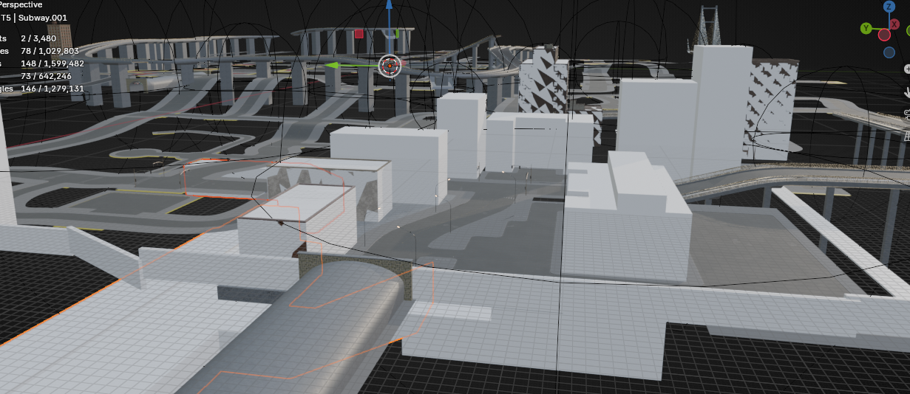
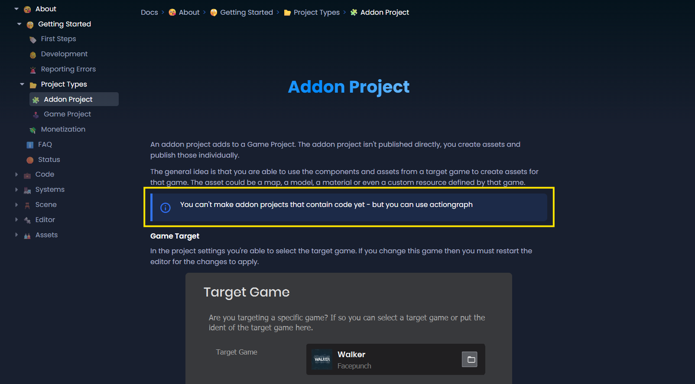

Where things stand
The honest short version is that map work is still moving, and code is still making progress, but AfterDarkRP has not had the same amount of uninterrupted focus lately because client work has been taking priority inside the studio. Since the last public post on March 13, 2026, progress has been real, but it has been narrower and more environment-facing than systems-heavy.
That is why this entry is mostly about the city itself. The main visible movement right now is continued work on the map, especially around the Ghetto 01 space, where blockout, proportions, and street readability are getting pushed forward. The practical slowdown is that deeper system testing only goes so far until Ghetto 01 is playable enough to support it and until server-sided code can actually be run and checked properly.
New map reads
The latest captures show where the environment is landing, but the screenshot below also shows the real project blocker more directly: I still cannot properly boot and run the server-side code in this setup yet, so deeper testing is blocked by that limitation rather than by missing art polish alone.


The building pass is also doing technical work, not just visual work. A big part of the current test is LOD behavior: how much structure, breakup, and readable detail can stay on screen while still retaining 100+ FPS. The target is to balance that cost honestly so the district keeps its density without turning into a performance sink.
The point of this stage is to work around the current limitation as honestly as possible. Until server-side code can actually be booted and tested properly, the useful work is getting Ghetto 01 playable enough to support cleaner validation later instead of pretending the main blocker is just unfinished visuals.
Code progress is still happening
This is not a case where map work replaced code entirely. Code is still moving. The main difference is that the remaining programming work is increasingly gated by playability and test conditions instead of just implementation time.
The clearest example is weed growing. The loop is close, and the main missing piece right now is the sell loop rather than the whole production chain. That is a much better place to be than a few weeks ago, but it also means the next useful testing pass depends on having a space that can actually support the loop under real server conditions.
Other changes since March 13, 2026
Even with less direct AfterDarkRP feature time, the public-facing side of the project and studio has still changed quite a bit since the last blog post.
- The AfterDarkRP site was converted to cleaner directory-style routes across the main public pages, which makes the project read more like a real product surface instead of a loose set of files.
- The Nightshift site went through a broader visual overhaul across the studio, game, contact, and devlog pages.
- Studio-facing surfaces now make website services, direct support, and FAB tooling more visible on the main site.
- Placeholder sample art is now labeled more clearly across the game pages and older devlog entries so mock assets do not read like final production captures.
What that means for AfterDarkRP
The tradeoff is straightforward: some of the last stretch went into client work and public-facing studio cleanup instead of deep server feature pushes. I would rather say that directly than pretend there was a huge gameplay milestone where there was not.
AfterDarkRP is still active. The difference is that the current progress is concentrated on getting Ghetto 01 playable, keeping code moving where it can, and reaching the point where server-sided code can actually be run and tested instead of assumed.
What comes next
- Keep pushing the map until Ghetto 01 has a stronger playable read in-engine.
- Finish the weed-growing sell loop once the map and testing conditions support a cleaner pass.
- Return more direct focus to AfterDarkRP systems as client work pressure eases.
- Continue tightening the public-facing site so the project stays readable while development pace shifts week to week.
The work is still moving. It is just moving through the map, testability, and studio schedule first.